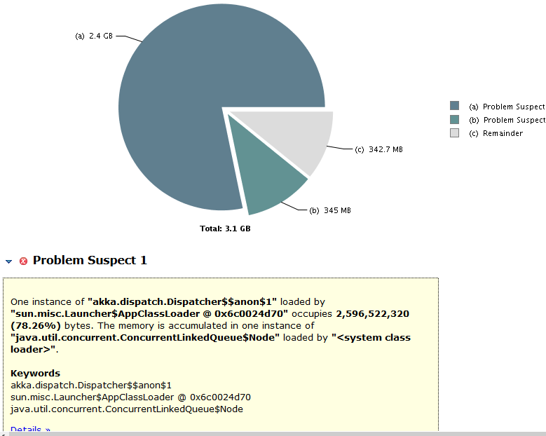

最近应用在测试中出现Out Of Memory的问题， 通过jmap查看，发现JVM heap全用满了。
有很多工具可以查看JVM堆的信息， 收费的比如JProfiler， YourKit，免费的如Oracle JDK自带的visualvm, jhat和Eclipse MAT。
这个应用安装在一台AWS上，没有图形界面， 内存也比较小，想通过VNC远程桌面启动visualvm或者MAT不可能，通过jhat分析dump出来的snapshot(大约4.3G)也很慢，半天没有分析完毕，这种办法也放弃。
最后通过MAT的命令行工具分析了dump出来的snapshot,查找到OOM的元凶。
使用MAT命令行工具
首先通过jstat或者jmap查看heap信息,比如通过jmap查看：
|
|
最多的类的实例:
|
|
从分析来看猜测是akka actor mailbox里面的字符串消息太多了。
既然没有办法图形化启动visualvm和MAT,那么就使用MAT文件夹下的ParseHeapDump.sh, 特别适合分析大堆的信息。
首先你需要修改MemoryAnalyzer.ini中的Xmx值，确保有充足的硬盘空间(至少dump文件的两倍)。
然后运行
|
|
会得到suspects, overview和top_components三个视图的信息。

可以看到akka.dispatch.Dispatcher$$anon$1一个实例占用了2.4GB的内存，这就是罪魁祸首。这其实是akka dispatcher的mailbox中的java.util.concurrent.ConcurrentLinkedQueue，每个Node占用了81M的内存，
消息体太大了。
编写程序得到所需信息
你也可以引用MAT的类，得到heap dump中的信息， 因为MAT使用Eclipse RCP框架， 基于osgi架构，使用起来不太方便，所以你可以别人抽取出来的MAT库，如https://bitbucket.org/joebowbeer/andromat,
然后实现一个命令行程序,比如下面的例子就是输出所有的字符串的值：
|
|
基本上使用ParseHeapDump.sh已经得到了我所需要的结果，优化akka actor消息的内容解决了我的问题。
参考文档
- https://wiki.eclipse.org/MemoryAnalyzer/Extending_Memory_Analyzer
- http://javaforu.blogspot.jp/2013/11/analyzing-large-java-heap-dumps-when.html
- http://dr-brenschede.de/bheapsampler/
- http://www.techpaste.com/2015/07/how-to-analyse-large-heap-dumps/
- http://stackoverflow.com/questions/15977723/analyse-a-hprof-memory-dump-file-from-command-line-programmically
- http://wangjunyan.github.io/2014/12/02/export-android-bitmap-from-dump-file/